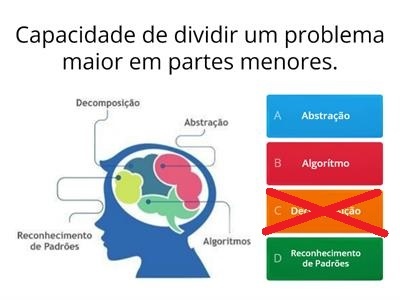
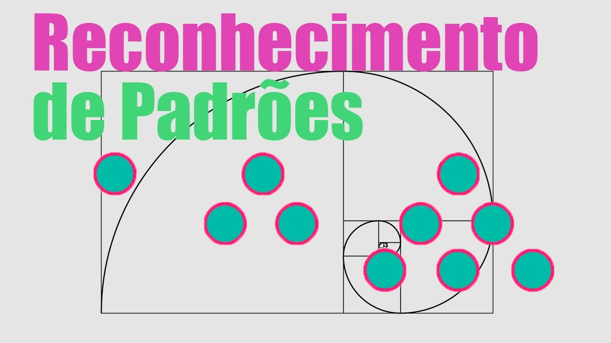

Processo que divide os problemas em partes menores para facilitar a resolução, desenvolvimento e gerenciamento. Se faz necessário analisar os problemas para identificar as partes que podem ser separadas, além de pensar em formas de como retomar para o problema inicial.
Os padrões são características que alguns problemas compartilham.
A prática em identificar padrões é uma características dos seres humanos, que nos acompanham desde a nossa infância, além disso, ela está sempre evoluindo, o que quer dizer que nosso repertório está sempre aumentando.
